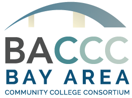

Responsive
IT Support
Cloud Migration & Management
Remote Systems Administration
Backup Solutions
Infrastructure Updates & Refresh
Cybersecurity Solutions

Risk Management
Vulnerability Assessment
Penetration Testing
Endpoint & Network Security
Digital Forensics
Cybersecurity Education
Awareness Training
Defensive Training
Competitions